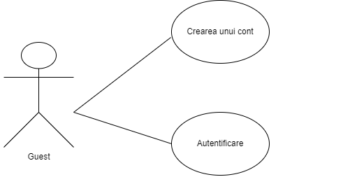
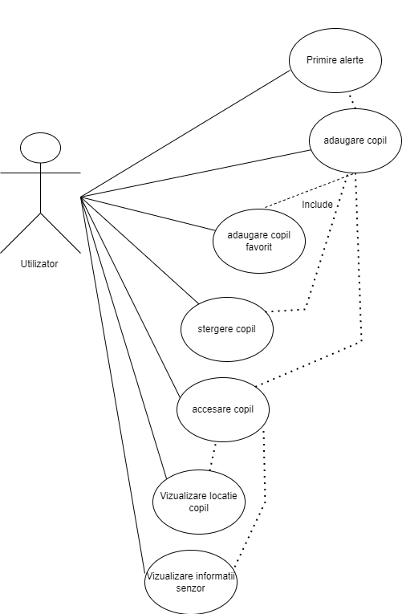
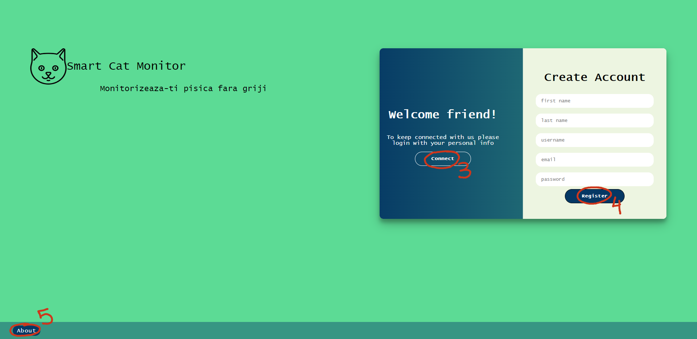
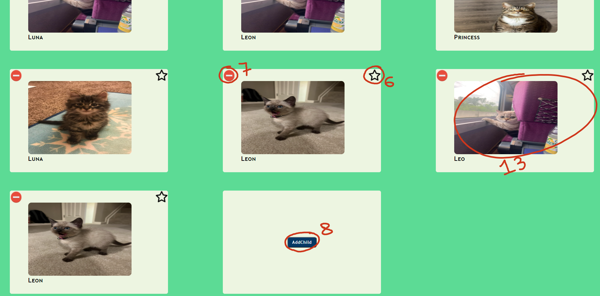
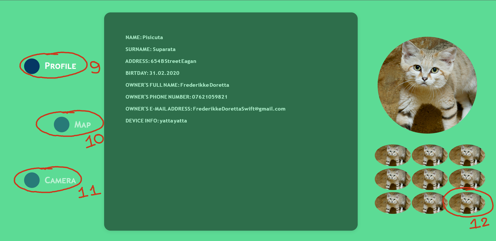
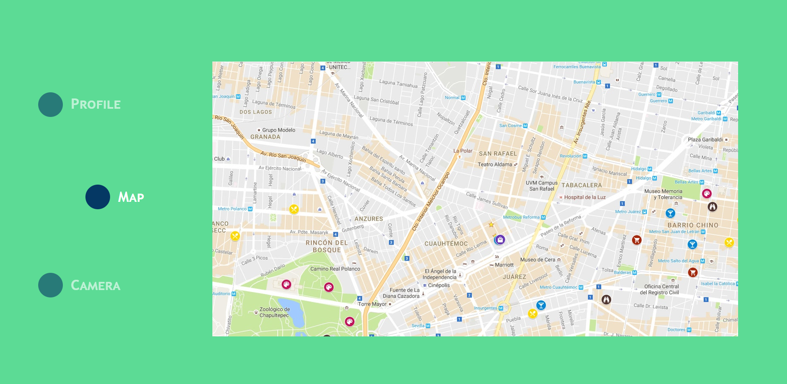
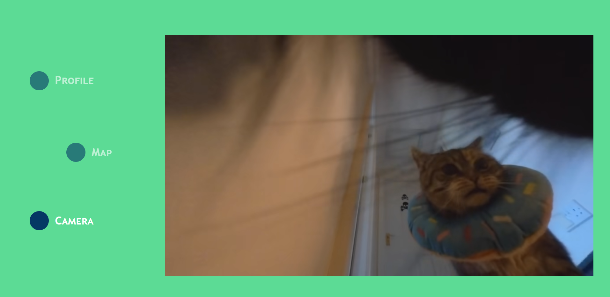

Scopul principal al acestui document este de a oferi un exemplu de functionare a aplicatiei Smart Children Monitor.
Scopul proiectului este realizarea unui sistem Web de monitorizare in timp real a unui copil sau a unui grup de copii.
Se vor oferi informatii despre locatia actuala, cu cine se intalneste, informatii privind posibile accidente sau situatii periculoase.
In cadrul aplicatiei web exista doua tipuri de actori:
Guest - actor care poate accesa doar pagina principala. Acesta are doua posibilitati: de a se autentifica, sau de a-si crea un cont de utilizator.
Dupa autentificare/inregistrare, actorul "guest" va deveni "utilizator".
User - actor care poate accesa toate functionalitatile aplicatiei web.
Limitari Hardware: Dispozitivul folosit pentru monitorizarea copilului are nevoie de o conexiune permanenta la internet pe baza unei cartele SIM.
Solutia finala va fi insotita de un manual de utilizare.
Pentru o utilizare corecta a interfetei urmariti urmatorii pasi:
1. "Login" - dupa introducerea datelor se realizeaza autentificarea unui user si redirectionarea catre pagina principala.
2. "Join" - dupa apasarea butonului va aparea optiunea de a te inregistra.
3. "Connect" - dupa apasarea butonului va aparea optiunea de a te autentifica.
4. "Register" - dupa introducerea datelor se realizeaza inregistrarea unui user si redirectionarea catre pagina principala.
5. "About" - dupa apasarea butonului va aparea un popup care ofera informatii despre aplicatie.
6. "Star" - dupa apasarea pe steluta copilul va fi adaugat la lista de favoriti.
7. "Remove" - dupa apasarea pe delete se va cere o confirmare pentru stergerea copilului.
8. "AddChild" - dupa apasarea pe buton va aparea un formular pentru adaugarea unui copil.
13. "Child image" - dupa apasarea pe imagine se va redirectiona la pagina copilului.
9. "Profile" - dupa apasarea pe buton se va redirectiona catre pagina generala a copilului.
10. "Map" - dupa apasarea pe buton se va redirectiona catre pagina unde este afisata locatia copilului.
11. "Camera" - dupa apasarea pe buton se va redirectiona catre pagina unde este afisata camera live a copilului.
 In cadrul aplicatiei vom folosi arhitectura MVC si abordare bazata pe microservicii.
Se va folosi HTTP pentru comunicarea intre frontend si backend.
Aceasta aplicatie contine urmatoarele functionalitati:
Implementarea protectiei impotriva atacurilor de tip „injection”.